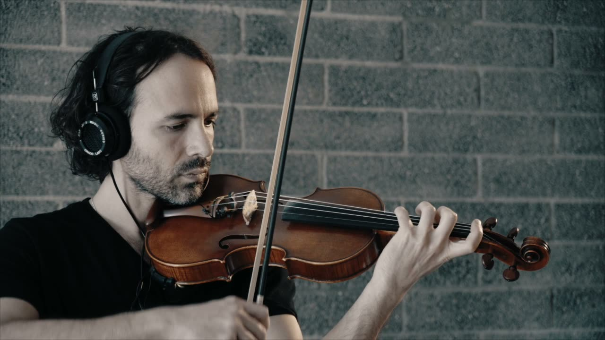

Chaconne (2020) for Violin
Project Description
The theme of NIME 2022 is “Decolonizing Musical Interfaces.” This performance recovers a nomadic trait in the violin, a common baroque practice before the triumph of classical “works.” Signal processing reorganizes the musical activity; the coherence of the musical event emerges through the less scripted, less top-down creative activity. The violin, the quintessential western stringed instrument, is reinvented—in fact, this extremely versatile instrument and has always been prone to it, as Dan Trueman has said.1
The performance is a rendition of Bach’s paradigmatic solo violin work, Chaconne. Machine listening drives a dense variety of synthesis and resampling techniques, including polyphonic live looping, spectral processing, pulsar synthesis, resonant filter banks, granular capture buffers, and subtractive synthesis. The violinist is invited to linger on the thematic materials in order to hear them undergo a captivating electronic transmutation. Ableton Live is used for this performance, employing a variety of custom Max for Live devices. More extended and detailed descriptions of the system as it has evolved through the last several years are available in several publications [1][2].
Type of submission
“NIMEs with a story”
Program Notes
This piece was premiered at the 2020 Conference of the International Society for Acoustic Information Retrieval (ISMIR). It is part of a larger project by the author to promote signal processing techniques and hardware that might appeal to traditional violinists as well as beginners—a “NIME with a story” that the performer hopes will continue.
Media

▶Chaconne (2020) for Violin
Ethics Statement
Aspects of this project have been funded by the author’s university startup funding as well as a research investment grant awarded by the same institution. There are no data, privacy, consent, or remuneration considerations.
Footnotes
Citations
- ↩Thorn, S. D. (2021). Flows of Inhomogeneous Matter: Improvising an augmented violin. Organised Sound, 26(1), 65–77. https://doi.org/10.1017/S1355771821000066
- ↩Thorn, S. D. (2019). A Computational System for Violin: Synthesis and Dissolution in Windowless. Leonardo Music Journal, 29, 42–44.